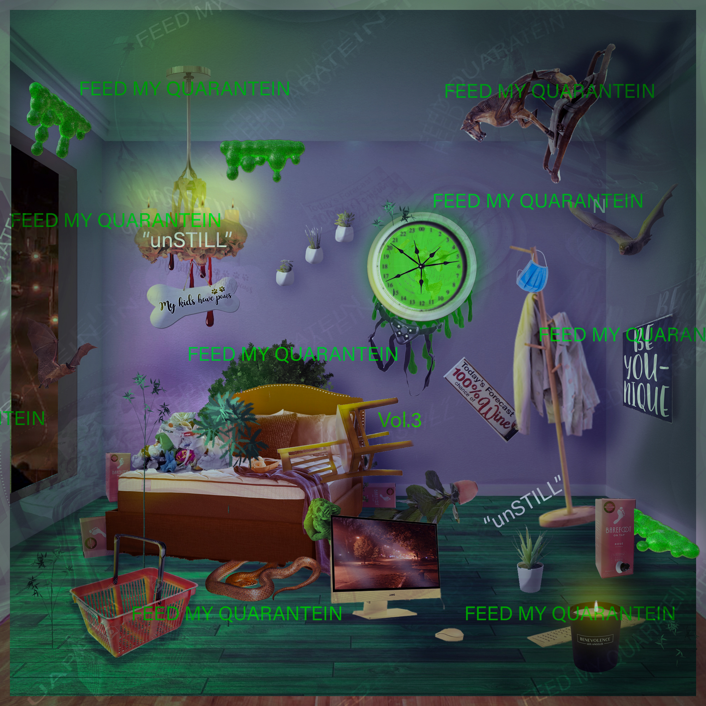

ABOUT
ByAppointmentOnly.vip is an experimental web platform for artists’ projects.
ByAppointmentOnly.vip is an open exhibition space, flexible to respond to the rapidly changing art-environment.
ByAppointmentOnly.vip has no predetermined trajectory.

Feed My Quarantein
The first element on the site is an ongoing web-based publication featuring the work of digital artists in response to the 2020 social distancing period. FMQ has featured over 50 artists from across the world, including
Camille Soulat, Dawn DeDeaux, Dew Kim, Felipe Di Poi Tamargo, Imani Jacqueline Brown, Jenna Knoblach, Joe George, John Irving, John Isiah Walton, Kelci M. Kelci, Patrick Coll, Ralph Pugay, Tom O’Brien, Cora Lautze, Aaron Dunn, Brendan Gavin, Brian Patrick Franklin, Brittan Rosendahl, Charmaine Ortiz, Davitt Terrell, Devin Reynolds, Diane Kim, Jonas Culberg, Feline Hjermind, Francisca Sousa, Fred Cosci, Grace Houghton, Gregory Nagmonovitch, Gwen Evans, Jacob Edwards, Jenna Deboisblanc, Jeremy Jones, Zody Zellen, Joost Koster, Kelly Rick, Lauren Barron, Lauren Budreau, Lorna Mills, Margaret Hull, Matthew Mann, Nacoca Ko, Raina Benoit, Sherri Lynn Wood, Simon Hutchinson, Sophia Belkin...